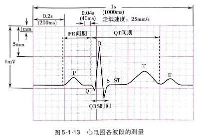

| 波段名称 | 波段意义 |
|---|---|
| P波 | 为心电图上的第1个波，代表心房除极波 |
| PR段 | P波之后是PR段，代表心房到心室除极所需要的时间，若发生传导阻滞，PR段会延长 |
| QRS波群 | R段后为QRS波群，代表心室除极波。若心室除极出现问题，如束支传导阻滞、室内传导延迟等，QRS波群会增宽。若出现房室旁道，亦会发生异常，表现为起始的δ波，QRS波群增宽； |
| ST段 | QRS波群之后为ST段，从ST段可以观察心脏是否有缺血，ST段无论压低或抬高，均提示有异常 |
| T波 | T波为心室的复极波，通过T波形态，可观察心脏是否有异常。 |